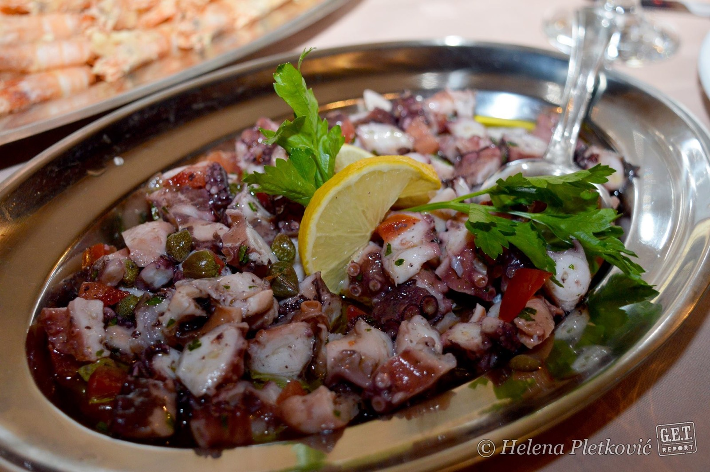

Jelovnik
Iz naše kuhinje
Izbor iz jelovnika Konobe Zlinje. Svaki dan imamo i dnevnu ponudu, a glavna jela i pizze najbolje je provjeriti telefonom.

Za veće društvo
Jelovnik po vašoj želji
Za vjenčanja, krštenja i druge posebne prigode, kao i za catering, složit ćemo jelovnik prema vašim željama. Nazovite nas za detalje.